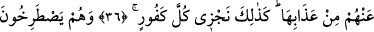
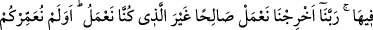
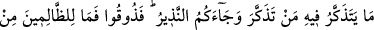
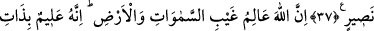
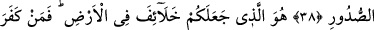
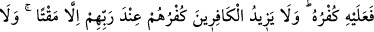
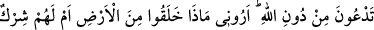
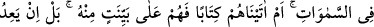
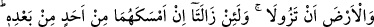
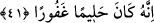

DÜŞÜNECEĞİNİZ KADAR
ÖMÜR VERMEDİK Mİ?
36. İnkâr edenlere de cehennem ateşi vardır. Öldürülmezler ki ölsünler,
cehennem azabı da onlara biraz olsun hafifletilmez. İşte biz, küfürde ileri giden her
nankörü böyle cezalandırırız.
37. Onlar orada: Rabbimiz! Bizi çıkar, (önce) yaptığımızın yerine iyi işler
yapalım! diye feryad ederler. Size düşünecek kimsenin düşünebileceği kadar bir
ömür vermedik mi? Size uyarıcı da gelmedi mi? (Niçin inanmadınız?) Şimdi tadın
(azabı)! Zâlimlerin yardımcısı yoktur.
38. Allah, göklerin ve yerin gaybını bilir. O, kalplerin içinde ne varsa onu da
hakkıyla bilendir.
39. Sizi yeryüzünde halîfeler yapan O’dur. Onun için kim inkâr ederse, inkârı
kendi zararınadır. Kâfirlerin küfrü, Rableri katında kendileri için ancak gazabı
arttırır. Kâfirlerin küfrü, kendilerine ziyandan başka bir şey getirmez.
40. De ki: Allah’ı bırakıp da taptığınız, ortaklarınızı gördünüz mü? Gösterin
bana! Onlar yerdeki hangi şeyi yarattılar! Yoksa onların göklerde mi bir